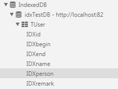

由于indexedDB数据库兼容性还不是很好，需要为各自的对象各自浏览器加上前缀，我们 可以按下面来做统一对象
//indexDB对象
window.indexedDB = window.indexedDB || window.mozIndexedDB || window.webkitIndexedDB || window.msIndexedDB;
//事务对象
window.IDBTransaction = window.IDBTransaction || window.webkitIDBTransaction || window.msIDBTransaction || {READ_WRITE: "readwrite"};
//key过滤对象
window.IDBKeyRange = window.IDBKeyRange || window.webkitIDBKeyRange || window.msIDBKeyRange;
e.target.result == this.result //这二者是等价的
有了数据库后我们自然希望创建一个表用来存储数据，但indexedDB中没有表的概念，而是objectStore，一个数据库中可以包含多个objectStore，objectStore是一个灵活的数据结构，可以存放多种类型数据。也就是说一个objectStore相当于一张表，里面存储的每条数据和一个键相关联。
我们可以使用每条记录中的某个指定字段作为键值（keyPath），也可以使用自动生成的递增数字作为键值（keyGenerator），也可以不指定。选择键的类型不同，objectStore可以存储的数据结构也有差异
db.createObjectStore(storeName, keyPath);
objectStore = db.createObjectStore("students",{keyPath:"id"}); //实例1
objectStore = db.createObjectStore("students",{autoIncrement:true}); //实例2
objectStore = db.createObjectStore('TUser', { //实例3
keyPath: 'id',
autoIncrement: true
});
objectStore.createIndex(indexName, keyPath, objectParameters)
创建的索引名称，可以使用空名称作为索引。
索引使用的关键路径(索引的属性的名字，即表格的列标题)
在建立存储空间时，指定的存储键可以有两种，一种是通过keyPath指定存储键，另一种是通过autoIncrement使记录自增，如果我们想为存储空间指定多个键要怎么办呢？IndexedDB提供了创建索引的方式，下面我们看一下如何创建索引以及索引的作用。 要创建索引，首先要引用对象存储空间，然后调用createIndex()方法，如下示例：
var store = db.createObjectStore("teachers",{keyPath:id});
var index = store.createIndex("age","age",{unique:false});
var transaction = db.transaction(['students']);
var objectStore = transaction.objectStore('students'); //获取students object store
objectStore.add(newData); //添加数据
在对新数据库做任何事情之前，需要开始一个事务。事务中需要指定该事务跨越哪些object store。
db.transaction(storeName,'readwrite');
var transaction = db.transaction('students'); //只读事务
var transaction = db.transaction(['students']);
var transaction = db.transaction(['students','taecher'],'readwrite'); //打开一个事务，使用 students 和 teacher object store
// boundRange 表示主键值从1到10(包含1和10)的集合。
// 如果第三个参数为true，则表示不包含最小键值1，如果第四参数为true，则表示不包含最大键值10，默认都为false
var boundRange = IDBKeyRange.bound(1, 10, false, false);
// onlyRange 表示由一个主键值的集合。only() 参数则为主键值，整数类型。
var onlyRange = IDBKeyRange.only(1);
// lowerRaneg 表示大于等于1的主键值的集合。
// 第二个参数可选，为true则表示不包含最小主键1，false则包含，默认为false
var lowerRange = IDBKeyRange.lowerBound(1, false);
// upperRange 表示小于等于10的主键值的集合。
// 第二个参数可选，为true则表示不包含最大主键10，false则包含，默认为false
var upperRange = IDBKeyRange.upperBound(10, false);
var request = indexedDB.open('dbName', 6);
// ...
request.onsuccess = function(e){
var db = e.target.result;
var tx = db.transaction('Users','readwrite');
var store = tx.objectStore('Users');
var range = IDBKeyRange.bound(1,10);
var req = store.openCursor(range, 'next');
req.onsuccess = function(){
var cursor = this.result;
if(cursor){
console.log(cursor.value.userName);
cursor.continue();
}else{
console.log('检索结束');
}
}
}
当存在符合检索条件的数据时，可以通过 update 方法更新该数据
cursor.updata({
userId : cursor.key,
userName : 'Hello',
age : 18
});
可以通过 delete 方法删除该数据
cursor.delete();
cursor.continue的作用在于使游标移动到结果集的下一项，默认情况下游标只发起一次请求，要想发起另一次请求使游标继续查找，则需调用continue(key)方法，该方法中参数可选，不指定参数，移到下一项，指定该参数，移到指定键的位置。
如果不加cursor.continue则会只出现第一条数据
cursor.continue();
window.indexedDB.open(dbName, version);
var db;
var dbName = "idxTestDB";
var DBOpenRequest = window.indexedDB.open(dbName, 1);// 打开数据库
//连接数据库失败时执行
DBOpenRequest.onerror = function(event){}
//数据库打开成功后
DBOpenRequest.onsuccess = function(event) {
db = DBOpenRequest.result; //存储数据结果
console.log('新数据库版本号为=' + event.newVersion);
};
DBOpenRequest.onsuccess = function(event) {
db = event.target.result;
db.close();
};
indexedDB.deleteDatabase(dbName);
// 下面事情执行于：数据库首次创建版本，或者window.indexedDB.open传递的新版本（版本数值要比现在的高）
DBOpenRequest.onupgradeneeded = function(event) {
var db = event.target.result;
// 创建一个数据库存储对象,即表格'TUser'
var objectStore = db.createObjectStore('TUser', {
keyPath: 'id',
autoIncrement: true
});
// 定义存储对象的数据项
objectStore.createIndex('id', 'idTest', {
unique: true
});
objectStore.createIndex('name', 'nameTest');
objectStore.createIndex('begin', 'begin');
objectStore.createIndex('end', 'end');
objectStore.createIndex('person', 'personTest');
objectStore.createIndex('remark', 'remark');
};
var request = indexedDB.open('dbName', 5);
// ...
request.onsuccess = function(e){
var db = e.target.result;
var tx = db.transaction('Users','readwrite');
var store = tx.objectStore('Users');
var value = {
'userId': 1,
'userName': 'linxin',
'age': 24
}
var req1 = store.put(value); // 保存数据
var req2 = store.get(1); // 获取索引userId为1的数据
req2.onsuccess = function(){
console.log(this.result.userName); // linxin
}
var req3 = store.delete(1); // 删除索引为1的数据
req3.onsuccess = function(){
console.log('删除数据成功'); // 删除数据成功
}
}